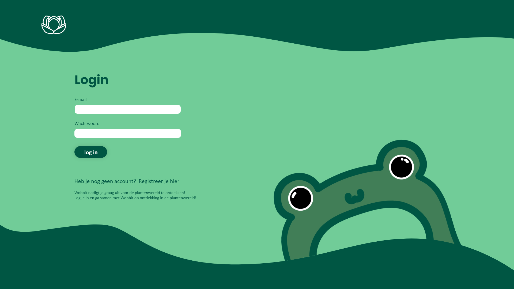

- Bloom -
mijn contributie:
- BACKEND - FRONTEND - DESIGN -
Over
Het project
In dit groepsproject, waarin we met vijf personen samenwerkten, ontwikkelden we een nieuwe app voor Plantentuin Meise, genaamd Bloom. Het doel was om jongeren te helpen meer over planten te leren. Daarom ontwierpen we een quizgame waarin gebruikers hun eigen profielfoto's en kikkers konden kiezen. Mijn rol in het project was voornamelijk gericht op het design, het frontend en het PHP-gedeelte. Ik heb echter niet bijgedragen aan de tekeningen.
Gebruikte technologiën
Adobe Programma's - PHP - HTML/CSS
Media

Design van de homepage.
Design voor het kiezen van gamemodes.
Design voor de API pagina.
Design voor de API pagina.
Design voor de API pagina.
Meer
Mijn aanpak
Voor het Bloom-project begonnen we met het brainstormen over de app en de functionaliteiten die we wilden aanbieden. Aangezien de app gericht was op jongeren die meer wilden leren over planten, hebben we gekozen voor een quizgame als centraal concept. Mijn bijdrage begon met het ontwerp van de interface, waarbij ik ervoor zorgde dat het visueel aantrekkelijk en gebruiksvriendelijk was. Daarna richtte ik me op het schrijven van het PHP-gedeelte om de back-endlogica te ondersteunen. Uiteindelijk hielp ik ook bij het frontend, waarbij ik de HTML en CSS verzorgde om de app er visueel goed uit te laten zien en te zorgen voor een soepele gebruikerservaring.